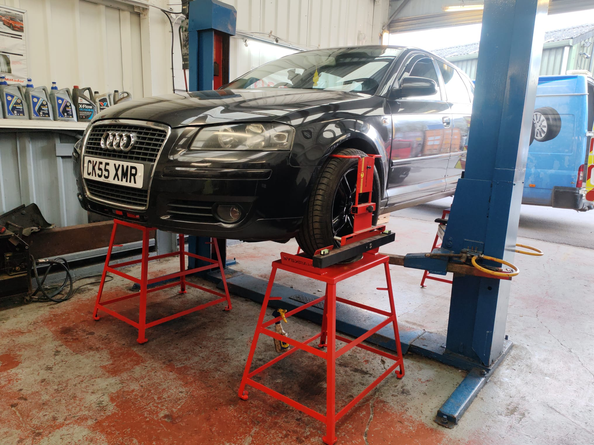
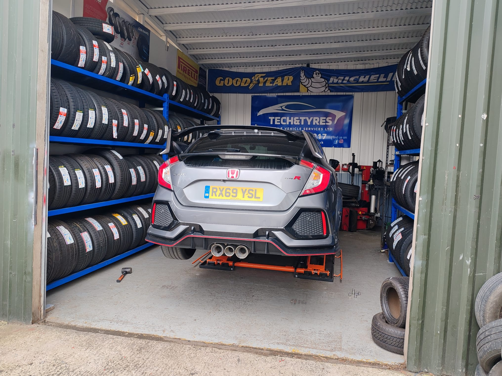
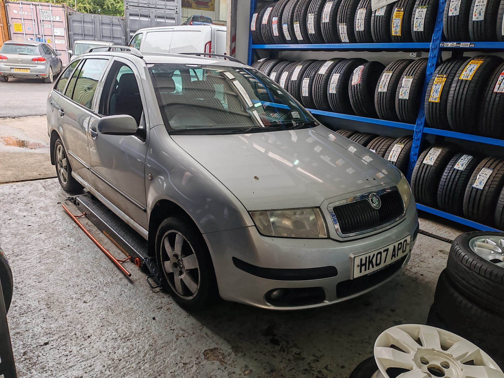

Full and interim vehicle servicing at your home, workplace or our Melksham depot. Keep your car running safely — without the hassle of a traditional garage visit.

Tech & Tyres delivers professional vehicle servicing in Melksham and across Wiltshire without requiring you to leave your home or workplace. Our qualified technicians carry out comprehensive services using quality parts — the same standard you'd expect from a main dealer, at a fraction of the inconvenience.
Regular servicing protects your engine, maintains resale value, and prevents costly breakdowns. Don't wait until something goes wrong.
Oil and filter change plus key safety checks. Recommended every 6 months or 6,000 miles.
Comprehensive inspection and replacement of all service items. Recommended annually or every 12,000 miles.
Full service plus spark plugs, air filter, fuel filter and other high-mileage items. Ideal for older vehicles.
Brake pads, discs, calipers and fluid checked and replaced where needed.


We come to your driveway or workplace — you carry on with your day while we work.
You're covered by a nationally recognised quality assurance standard.
We provide full documentation to maintain your vehicle's service history.
Premium quality without dealer-level pricing. Transparent quotes before we start.
.png)